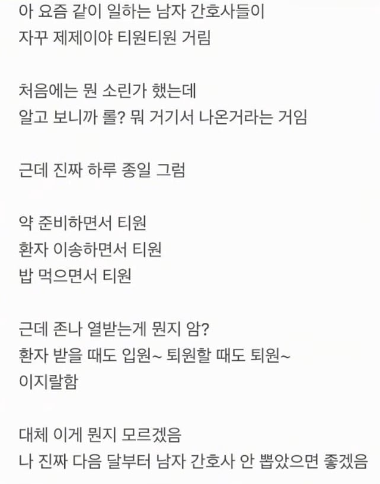

요즘 같이 일하는 남자간호사들이 자꾸 제제이야 티원티원 거림
댓글
저 간호사 남자한테 인기없을듯.
화자가 비호감으로 말해서 그렇지. 적어도 쭈글이는 아닐듯
걍 주변 동기 남자랑 교류가 없으면 저렇게 됨
저정도면 주변 여자랑도 없는거 아니냐

에?
퇴~원 ㅋㅋㅋ
입~원~ 퇴~원~ ㅋㅋㅋㅋㅋ

여간호사 똥군기 태~워
입~원~ (입원하는 톤으로) ㅋㅋㅋㅋ
입~원 퇴~원은 존나웃기네 ㅋㅋ
퇴~원~ㅋㅋㅋㅋ
줴줴이야 왜하는지 이해가 안감 원본 밈이 찰진가? 그것도 아님
난이런심리가 제일 이해안감
퉁퉁퉁퉁퉁 개지랄할때부터 난 모든걸 놨음
입원퇴원 개웃기네 ㅋㅋㅋㅋㅋㅋ
내가 롤을 안 해서 그런가? 저 밈을 잘 몰라서 그런가?
남자 간호사들이 더 이상한 거 같은데
보통 인방 말투 실생활에 쓰면 ㅂㅅ 같아 보이지 않음?
하루종일 그러면 좀 병신같을 듯ㅋㅋㅋ
그래서 짜치는 말투라고도 하잖아 ㅋㅋ
병신같긴한데 우리가 재밌으니 됐어ㅋㅋ
걍 일하면서 좀 웃으면서 환기 좀 하자는 의미에서 서로 병신같이 하는건데 ㅋㅋ 그게 아니꼬울게 있습니까?
퇴~원 이건 존니웃긴데 ㅋㅋㅋㅋ
입~원
입~원 ㅋㅋㅋ 이지랄 ㅋㅋㅋㅋㅋ개웃기네
입~원, 퇴~원은 ㅅㅂ ㅋㅋㅋㅋㅋ
코드블루 줴줴이야~
퇴~원은 개웃기네 ㅋㅋㅋ
입원 퇴원드립치려고 빌드업한듯
퇴~원 ~
하루종일 저 ㅈㄹ하면 장애지..
장~애~ 줴줴이야~
장웨이야~
입~원 퇴~원
근데 인방말투 커뮤말투 실생활에서 쓰는 씹병신찐따 새끼들은 역겹긴해 ㅇㅇ
여간호사들이 좋아죽는 태움을 남간호사한텐 못해서 열난건가?
니들 잘하는 태움 하면 되잖아?
줴줴이야는 유튜브에서 좀 들었는데
티원은 한번도 못들어봄
개드립도 많이 늙었네ㅋㅋ 꼰대 댓글들 보소
ㄹㅇ ㅈㄴ틀내나노
ㅋㅋㅋ퇴원이 웃기네
남~간